Starter
Para empezar a facturar.
4,95€/mes + IVA
59,40 € al año, facturación anual
Probar Starter 14 días- Hasta 10 clientes
- 1 usuario
- Hasta 30 productos
- 10 facturas al mes
- Escaneado OCR: 10 documentos al mes
- Soporte por correo
Nuevo: inventario, facturas recurrentes y recordatorios automáticos
Facturales es la suite financiera para autónomos y pymes en España: factura con VERI*FACTU, controla tu stock, cobra a tiempo con recordatorios automáticos y llega al trimestre con el 303 y el 130 ya calculados.


Capturas reales de Facturales con datos de ejemplo.
Por qué Facturales
Deja de perseguir papeles. Tus facturas, tu stock, tus cobros y tus impuestos, por fin en el mismo sitio, para que vuelvas a dirigir tu negocio.
Novedades
Inventario con control de stock, facturas recurrentes y recordatorios de cobro: ya están en tu cuenta para que dejes de hacer a mano lo que siempre es igual.
Existencias por producto, alertas de stock bajo y el historial de cada movimiento. Al emitir una factura se descuenta lo vendido; si la anulas, vuelve al stock.
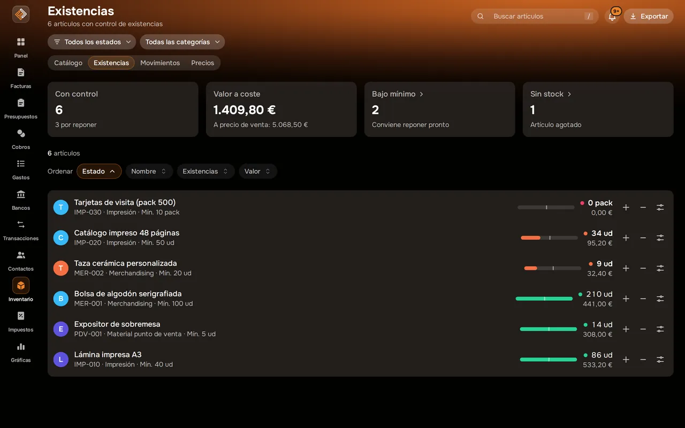
Cuotas, mantenimientos e igualas: cada periodo tienes el borrador listo para emitir.
Cómo funcionan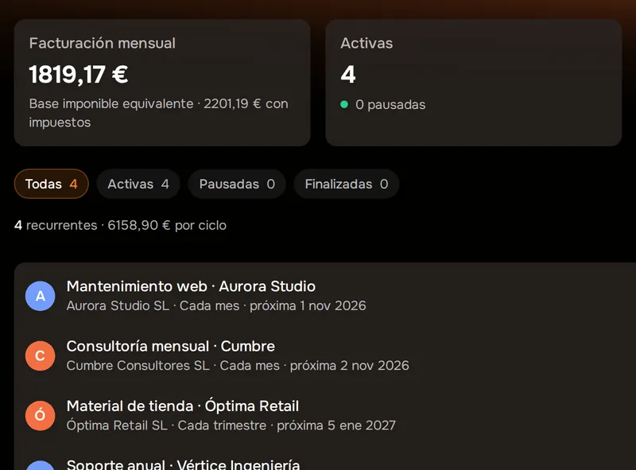
Antes, el día del vencimiento y después: Facturales avisa por correo a quien te debe.
Configurarlos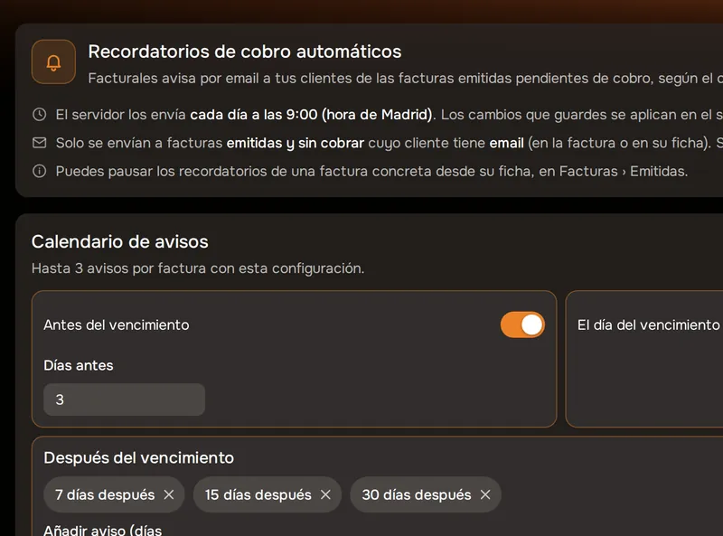
Los borradores que generan tus recurrentes esperan en Borradores. Revisa y emite de uno en uno o todos a la vez, con su numeración y su registro VERI*FACTU.
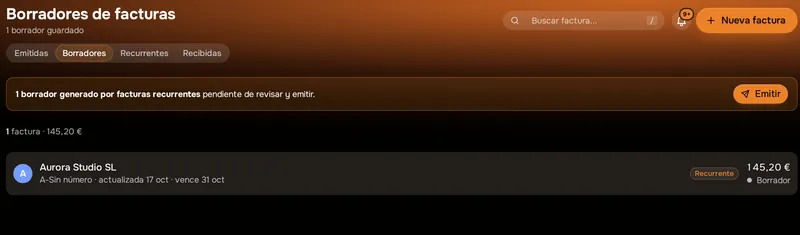
Tus movimientos se sincronizarán solos a través de un agregador bancario regulado. Mientras tanto, importa tus extractos en Excel o CSV y concilia en minutos.
Ver Bancos y conciliaciónCapturas reales de Facturales con datos de ejemplo.
La suite
Cada factura que emites, cada ticket que escaneas y cada movimiento que importas alimentan el mismo panel y los mismos impuestos. Sin copiar datos entre hojas de cálculo.
Ingresos, gastos y balance del año o de cada trimestre, lo que tienes pendiente de cobro y lo que necesita tu atención, con tus objetivos al lado.
Emite, envía y cobra tus facturas desde la misma lista: facturado, cobrado, pendiente y vencido siempre a la vista. Y lo que se repite, en recurrentes.
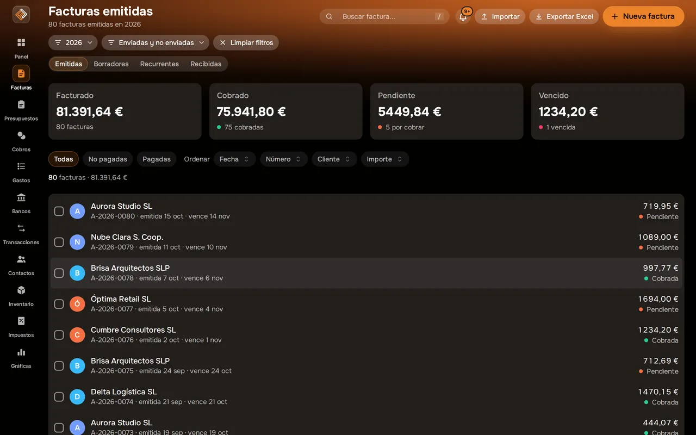
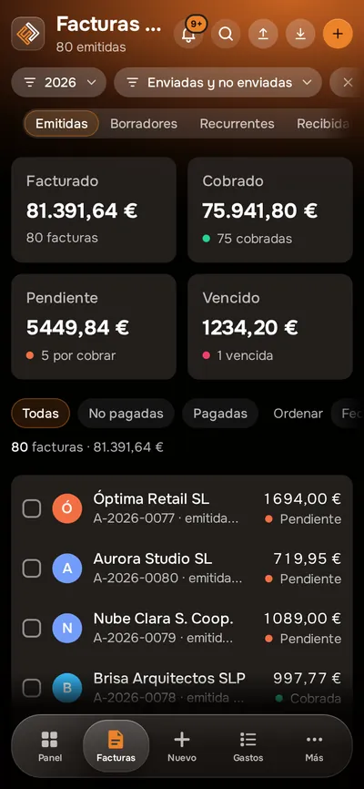
Productos y servicios con precios y márgenes, existencias por producto y alertas cuando algo baja del mínimo. Lo que facturas se descuenta solo.
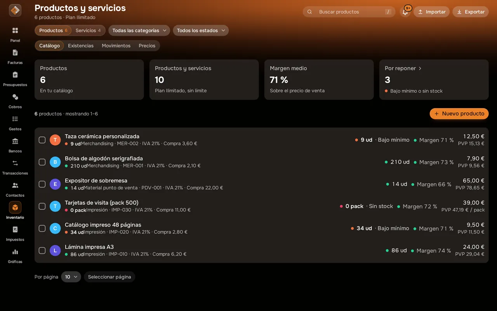
Los cobros pendientes, la previsión de las próximas semanas y la antigüedad de la deuda, por cliente, con recordatorios que se envían solos.
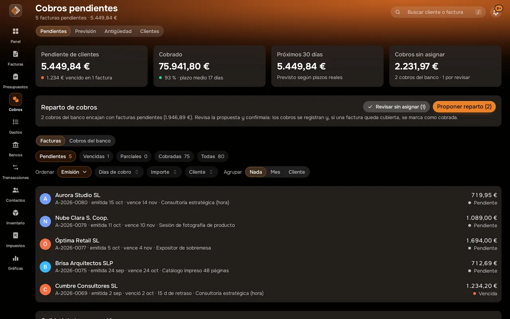
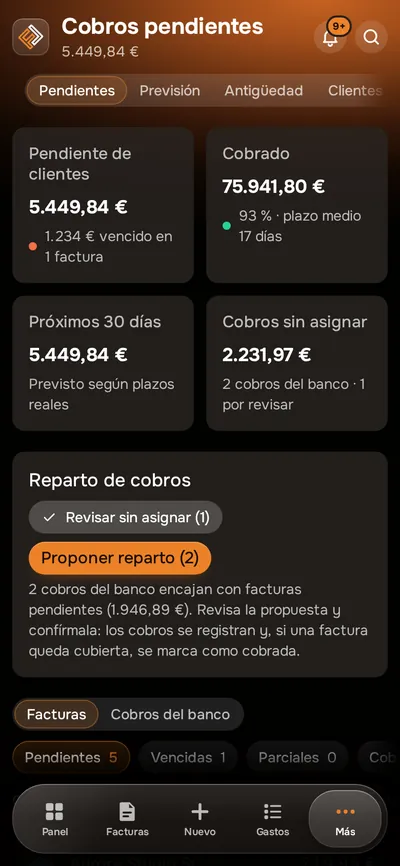
Importa el extracto que descargas de tu banco y Facturales te propone con qué factura, gasto o transacción encaja cada movimiento. Tú confirmas.
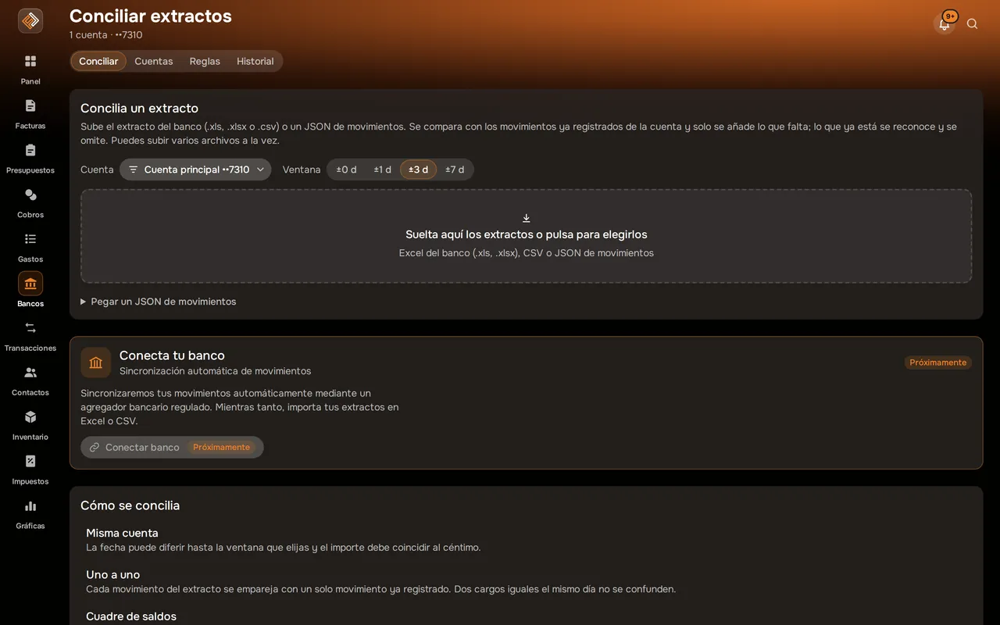
Haz una foto al ticket o sube el PDF y el OCR lee los datos. Ves qué movimientos aún no tienen justificante y cuánto gastas cada mes por categoría.

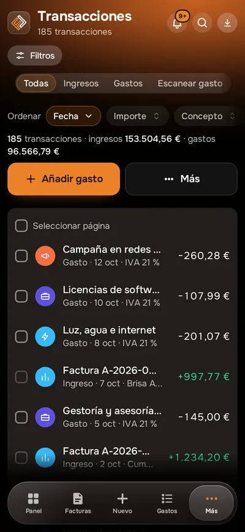
Facturales calcula el IVA repercutido y soportado y tus retenciones a partir de lo que ya has registrado, con el resumen listo para los modelos 303 y 130.
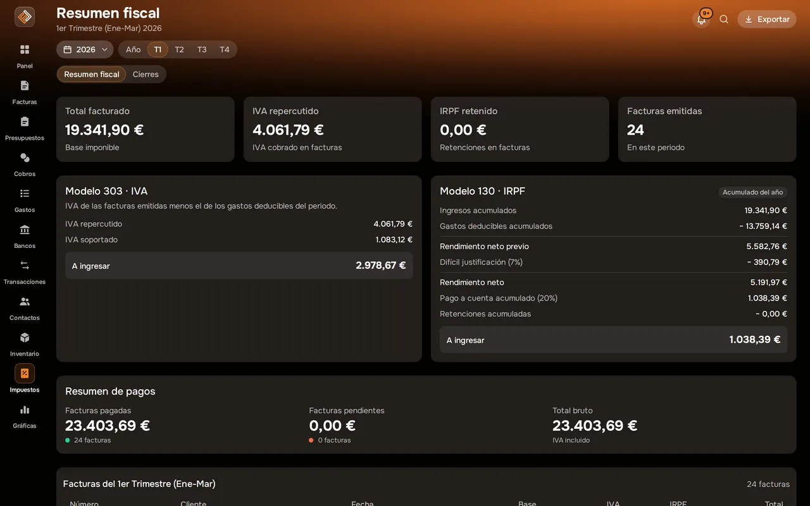
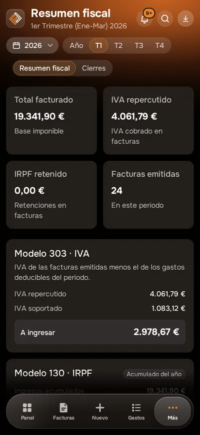
Cada factura, con su historia
Abre cualquier factura y tienes su estado, sus líneas, el cobro, los recordatorios y su registro VERI*FACTU. Desde ahí la envías, la marcas como cobrada, la conviertes en recurrente o la anulas con su rectificativa.
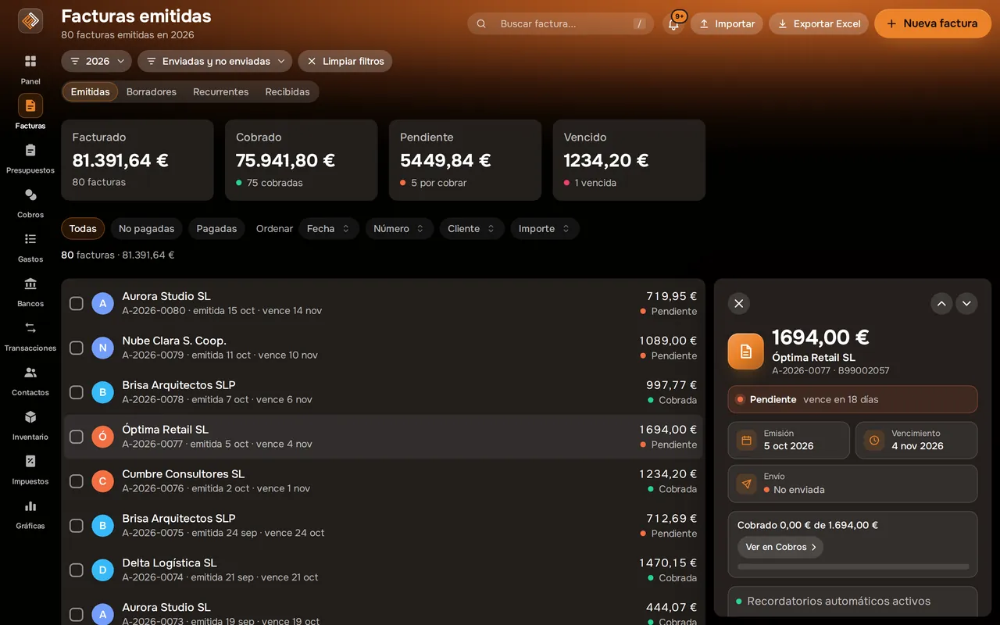
Equipo y gestoría
Invita a quien necesites y decide qué puede hacer. Tu gestor entra con su propio usuario, consulta lo que necesita y cierra los meses contabilizados sin pedirte archivos por correo.
Número de usuarios según plan: 1 en Starter, hasta 3 en Pro e ilimitados en Ilimitado.
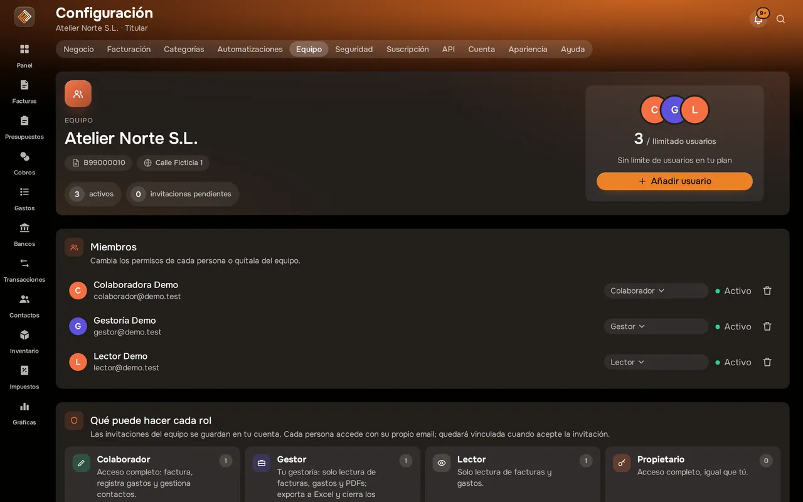
Seguridad
Protege el acceso con un código de tu app de autenticación (TOTP).
Cada cambio queda registrado: quién lo hizo y cuándo, en la actividad reciente y en cada documento.
Exporta tus datos cuando quieras y elimina la cuenta desde la propia app, conforme al RGPD.
Base de datos, autenticación y archivos en Irlanda, dentro del Espacio Económico Europeo.
Apps móviles
Facturales funciona en el navegador y tiene app para iOS y Android con la misma cuenta. Consulta lo pendiente de cobro, revisa tu stock y escanea el ticket en el momento en que te lo dan.
Capturas reales de Facturales con datos de ejemplo.
Precios
Todos los planes incluyen 14 días de prueba. Precios sin IVA.
Para empezar a facturar.
4,95€/mes + IVA
59,40 € al año, facturación anual
Probar Starter 14 díasPara profesionales y autónomos activos.
8,95€/mes + IVA
107,40 € al año, facturación anual
Probar Pro 14 díasEquipos, asesorías y alto volumen.
17,95€/mes + IVA
215,40 € al año, facturación anual
Probar Ilimitado 14 díasPreguntas frecuentes
¿Tienes otra duda? Escríbenos a soporte@facturales.es.
Ver todas las preguntasUna suite financiera en la nube para autónomos y pymes en España. Reúne en una sola cuenta la facturación (facturas, presupuestos, recurrentes y VERI*FACTU), el inventario, los cobros con recordatorios automáticos, los bancos, los gastos con sus justificantes y los impuestos trimestrales.
Cada factura emitida genera su registro de facturación con huella encadenada y lleva el código QR de cotejo. Puedes consultar el estado de tus registros en Ajustes › VERI*FACTU. Más detalles en nuestra guía de VERI*FACTU.
Conviertes cualquier factura en recurrente y eliges la periodicidad (semanal, mensual, bimestral, trimestral, semestral o anual) y cuándo termina. Cada periodo Facturales prepara el borrador con las fechas nuevas y te avisa; tú lo emites, de uno en uno o todos a la vez, con el flujo de siempre.
Sí. Activa el control de existencias en los productos que lo necesiten: llevas entradas, salidas y recuentos, recibes alertas de stock bajo y, al emitir una factura, se descuentan las unidades vendidas (y vuelven si la anulas). Hoy trabaja con un único almacén.
Sí. En Ajustes › Automatizaciones eliges cuándo avisar (antes del vencimiento, el mismo día y después), cuántos recordatorios como máximo por factura y el mensaje. Facturales los envía por correo, deja el historial y no escribe a facturas pagadas, anuladas o pausadas.
La conexión directa con tu banco llegará próximamente a través de un agregador bancario regulado. Hoy trabajas con los extractos que descargas de tu banco: los importas en Excel (xls, xlsx) o CSV y Facturales te propone con qué factura o gasto encaja cada movimiento. Tú confirmas cada conciliación y puedes deshacer cualquier importación.
Sí. Invitas a tu gestor con el rol «Gestor»: puede consultar facturas, gastos y PDF, exportar a Excel y cerrar los meses ya contabilizados, sin poder modificar tus documentos.
La base de datos, la autenticación y los archivos se alojan en Irlanda, dentro del Espacio Económico Europeo. Puedes exportar tus datos cuando quieras y activar la verificación en dos pasos.
No. Todos los planes empiezan con 14 días de prueba y puedes cancelar cuando quieras.
Crea tu cuenta, emite tu primera factura e importa tu primer extracto. Tienes 14 días de prueba en cualquier plan y puedes cancelar cuando quieras.